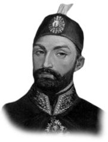

SULTAN ABDÜLMECİD
Babası : II. Mahmut
Annesi : Bezmiâlem Valide Sultan
Doğumu : 25 Nisan 1823
Vefatı : 25 Haziran 1861
Saltanatı : 1839 - 1861 (21 yıl)
Sultan Abdülmecit, İstanbul’da dünyaya geldi. Babası ona iyi bir tahsil yaptırmak için çok titiz davrandı. Kendisi biraz zayıfça idi. Çok zeki, terbiyeli, merhamet ve şefkatli bir kimseydi. Tahta çıktığında on altı yaşındaydı. Yeni gelişmeleri çok sıkı bir şekilde takip eder ve hemen Devlet-i Aliy-ye’de tatbik edilmesini isterdi.
Devrinde olan önemli olaylar: 1839 yılında Gülhane Hatt-ı Hümayunu okundu. 1846’da Mustafa Reşit Paşa sadrazam oldu. Maarif alanında pek çok ilerlemeler oldu. Bir çok meslek okulları açıldı. 1848’de Macar İsyanı dolayısıyla Macaristan’dan çok sayıda ilticalar oldu. Eflak ve Boğdan’da ihtilal oldu. Kutsal yerler meselesi ortaya çıktı. 1853’de Rusya Savaşı başladı. Sinop baskını oldu. 1854’de Ruslar karada büyük kayıplar verdiler. Meşhur Silistre Müdafaası yapıldı ve Ruslar bozuldu. Yerköyü Muharebesi kazanılabildi. Fransa ve İngiltere de Türkiye yanında yer aldılar ve Kırım’a çıkarma yapıldı. 1855’de Sivastopol alındı. Telgraf ve demiryolu hatları yapıldı. 1856’da Paris Antlaşması yapıldı. Ruslara karşı büyük menfaatler sağlandı. Abdülmecit, Dolmabah-çe Sarayı’nı yaptırdı ve Ortaköy’deki Mecidiye Camii’ni inşa ettirdi. 25 Haziran 1861’de babası gibi verem hastalığına tutularak vefat etti. Öldüğünde otuz sekiz yaşındaydı. Fatih’teki Sultan Selim Camii avlusundaki türbesine gömüldü.
Erkek çocukları: Ahmet, Mehmet Burhaneddin, Bahad-din, Rüştü Mehmet, Seyfüddin, Osman, Ziyaeddin Mehmet, Abid Mehmet, Abdüssamed Mehmet, Fuad Mehmet, Nu-reddin, Vamuk Mehmet, Abdülhamit, Mehmet Vahdettin, Süleyman, Kemaleddin, Nizameddin, Mehmet Reşat.
Kız çocukları: Bedihe, Behice, Samiye, Mediha, Refia, Se-hime, Sabiha, Aliye, Fatma, Cemile, Seniha, Fehime, Mühibe, Mukbile, Münire, Naime, Neyyire, Behiye.